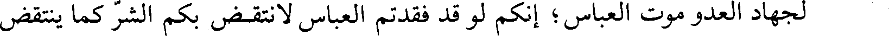
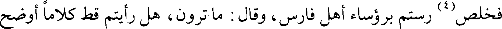
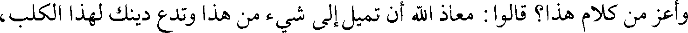
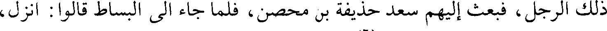
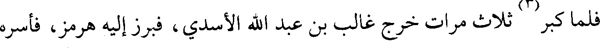
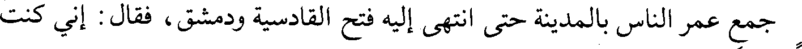
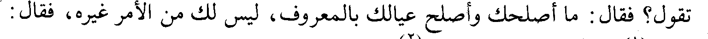

File: 000255.gt.txt (if the image is defective, simply delete all Arabic text and the line will be excluded)

عمرو، ثم التقوا بأجنادين، فاقتتلوا قتالا شديدا حتى كثرت القتلى بينهم، وانهزم
File: 000256.gt.txt (if the image is defective, simply delete all Arabic text and the line will be excluded)

أرطبون، فأوى إلى إيلياء، ونزل عمرو بأجنادين، فكتب إليه أرطبون : والله لا تفتح من
File: 000257.gt.txt (if the image is defective, simply delete all Arabic text and the line will be excluded)

فلسطين شيئا بعد أجنادين، فارجع لا تغن(2)، وإنما صاحب الفتح رجل إسمه على
File: 000258.gt.txt (if the image is defective, simply delete all Arabic text and the line will be excluded)

ثلاثة أحرف، فعلم عمرو أنه عمر، فكتب إلى عمر يعلمه أن الفتح مدخر له، فنادى له
File: 000259.gt.txt (if the image is defective, simply delete all Arabic text and the line will be excluded)

73/ب الناس، واستخلف علي بن أبي طالب، فقال له علي : أين تخرج بنفسك؟ / فقال : أبادر
File: 000260.gt.txt (if the image is defective, simply delete all Arabic text and the line will be excluded)

لجهاد العدو موت العباس ؛ إنكم لو قد فقدتم العباس لانتقض بكم الشر كما ينتقض
File: 000261.gt.txt (if the image is defective, simply delete all Arabic text and the line will be excluded)

فمات العباس لست خلون من إمارة عثمان، وانتقض بالناس الشر.
File: 000262.gt.txt (if the image is defective, simply delete all Arabic text and the line will be excluded)

168
File: 000263.gt.txt (if the image is defective, simply delete all Arabic text and the line will be excluded)

ورمحه معلوب(1) بقد، معه حجفة(2) من جلود البقر، فجاء حتى جلس على الأرض،
File: 000264.gt.txt (if the image is defective, simply delete all Arabic text and the line will be excluded)

وقال: إنا لا نستحب القعود على زينتكم ، فكلمه وقال : ما جاء بكم؟ قال : الله جاء بنا
File: 000265.gt.txt (if the image is defective, simply delete all Arabic text and the line will be excluded)

63/ب لنخرج من شاء من عبادة العباد إلى عبادة / الله، من جور الأديان إلى عدل الإسلام،
File: 000266.gt.txt (if the image is defective, simply delete all Arabic text and the line will be excluded)

فمن قبل ذلك قبلنا منه، ومن أبى قاتلناه حتى نفضي إلى موعود الله. قال : وما [هو] موعود
File: 000267.gt.txt (if the image is defective, simply delete all Arabic text and the line will be excluded)

الله؟ قال : الجنة لمن مات على قتال من أبى، والظفر لمن بقي.
File: 000268.gt.txt (if the image is defective, simply delete all Arabic text and the line will be excluded)

فقال رستم(3): هل لكم أن تؤخروا هذا الأمر لننظر فيه وتنظروا، قال : إنا لا نؤجل
File: 000269.gt.txt (if the image is defective, simply delete all Arabic text and the line will be excluded)

أكثر من ثلاث.
File: 000270.gt.txt (if the image is defective, simply delete all Arabic text and the line will be excluded)

فخلص(4) رستم برؤساء أهل فارس، وقال : ما ترون، هل رأيتم قط كلاما أوضح
File: 000271.gt.txt (if the image is defective, simply delete all Arabic text and the line will be excluded)

وأعز من كلام هذا؟ قالوا : معاذ الله أن تميل إلى شيء من هذا وتدع دينك لهذا الكلب،
File: 000272.gt.txt (if the image is defective, simply delete all Arabic text and the line will be excluded)

أما ترى إلى ثيابه، فقال : ويحكم لا تنظرون إلى الثياب، ولكن انظروا إلى الرأي
File: 000273.gt.txt (if the image is defective, simply delete all Arabic text and the line will be excluded)

والكلام والسيرة، إن العرب تستخف باللباس والمأكل ويصونون الأحساب.
File: 000274.gt.txt (if the image is defective, simply delete all Arabic text and the line will be excluded)

فرجع ربعي(5) إلى أن ينظروا في الأجل، فلما كان في الغد بعثوا : [أن] ابعث إلينا
File: 000275.gt.txt (if the image is defective, simply delete all Arabic text and the line will be excluded)

ذلك الرجل، فبعث إليهم سعد حذيفة بن محصن، فلما جاء الى البساط قالوا : انزل،
File: 000276.gt.txt (if the image is defective, simply delete all Arabic text and the line will be excluded)

قال : ذاك لو جئتكم في حاجتي(6)، الحاجة لكم لا لي، فجاء حتى وقف ورستم على
File: 000277.gt.txt (if the image is defective, simply delete all Arabic text and the line will be excluded)

سريره، فقال له : انزل، قال : لا أفعل، فقال : ما بالك ولم يجئ صاحبنا بالأمس؟
File: 000278.gt.txt (if the image is defective, simply delete all Arabic text and the line will be excluded)

قال : أميرنا يحب أن يعدل بيننا في الشدة والرخاء، وهذه نوبتي، فتكلم بنحو ما تكلم به
File: 000279.gt.txt (if the image is defective, simply delete all Arabic text and the line will be excluded)

ربعي، ورجع.
File: 000280.gt.txt (if the image is defective, simply delete all Arabic text and the line will be excluded)

فلما كان(7) من الغد أرسلوا : ابعث لنا رجلا، فبعث اليهم المغيرة بن شعبة،
File: 000281.gt.txt (if the image is defective, simply delete all Arabic text and the line will be excluded)

وقام كل واحد(1) بنحو هذا الكلام، وتواثق الناس وتعاهدوا، وفعل أهل فارس
File: 000282.gt.txt (if the image is defective, simply delete all Arabic text and the line will be excluded)

وقال سعد : الزموا مواقفكم، لا تحركوا شيئا حتى تصلوا الظهر، فإذا صليتم
File: 000283.gt.txt (if the image is defective, simply delete all Arabic text and the line will be excluded)

الظهر فإني مكبر تكبيرة، فكبروا واستعدوا، واعلموا أن التكبير لم يعطه أحد قبلكم،
File: 000284.gt.txt (if the image is defective, simply delete all Arabic text and the line will be excluded)

وإنما أعطيتموه تأييدا [لكم]. ثم إذا سمعتم الثانية فكبروا، ولتستتم عدتكم، ثم إذا كبرت
File: 000285.gt.txt (if the image is defective, simply delete all Arabic text and the line will be excluded)

الثالثة فكبروا، ولينشط فرسانكم الناس ليبرزوا وليطاردوا، فإذا كبرت الرابعة فارجفوا
File: 000286.gt.txt (if the image is defective, simply delete all Arabic text and the line will be excluded)

جميعا حتى تخالطوا عدوكم، وقولوا: لا حول ولا قوة إلا بالله.
File: 000287.gt.txt (if the image is defective, simply delete all Arabic text and the line will be excluded)

فلما كبر(2) ثلاث مرات خرج غالب بن عبد الله الأسدي، فبرز إليه هرمز، فأسره
File: 000288.gt.txt (if the image is defective, simply delete all Arabic text and the line will be excluded)

غالب، وجاء به إلى سعد، وخرج طليحة إلى عظيم منهم فقتله، وقام بنو أسد فبالغوا في
File: 000289.gt.txt (if the image is defective, simply delete all Arabic text and the line will be excluded)

جهاد الفيلة ودفعها، فكبر سعد الرابعة فزحف إليهم المسلمون، وحملت الفيلة على
File: 000290.gt.txt (if the image is defective, simply delete all Arabic text and the line will be excluded)

الميمنة، والميسرة على الخيول.
File: 000291.gt.txt (if the image is defective, simply delete all Arabic text and the line will be excluded)

65/ب وأقبل أصحاب / عاصم على الفيلة، فقطعوا خراطيمها(4)، فارتفع عواؤها(5)،
File: 000292.gt.txt (if the image is defective, simply delete all Arabic text and the line will be excluded)

واقتتلوا حتى غربت الشمس، وحتى ذهب هدة من الليل، ثم تراجعوا، وأصيب في تلك
File: 000293.gt.txt (if the image is defective, simply delete all Arabic text and the line will be excluded)

العشية خمسمائة رجل، وهذا يومها الأول، وهو يوم أرماث.
File: 000294.gt.txt (if the image is defective, simply delete all Arabic text and the line will be excluded)

[يوم أغواث](6)
File: 000295.gt.txt (if the image is defective, simply delete all Arabic text and the line will be excluded)

ثم أصبح القوم من الغد على تعبية وقد وكل سعد رجالا بنقل الشهداء إلى
File: 000296.gt.txt (if the image is defective, simply delete all Arabic text and the line will be excluded)

العذيب، وأسلم الرثيث(7) إلى النساء يقمن عليهم، ودفن الشهداء(8)،فبينا هم كذلك إذ
File: 000297.gt.txt (if the image is defective, simply delete all Arabic text and the line will be excluded)
197
File: 000299.gt.txt (if the image is defective, simply delete all Arabic text and the line will be excluded)

جمع عمر الناس بالمدينة حتى انتهى إليه فتح القادسية ودمشق، فقال: إني كنت
File: 000300.gt.txt (if the image is defective, simply delete all Arabic text and the line will be excluded)

امرأ تاجرا يغني الله عز وجل عيالي بتجارتي، وقد شغلتموني بأمركم هذا، فماذا ترون
File: 000301.gt.txt (if the image is defective, simply delete all Arabic text and the line will be excluded)

أنه يحل لي من هذا المال؟ فأكثر القوم وعلي رضي الله عنه ساكت، فقال : يا علي، ما
File: 000302.gt.txt (if the image is defective, simply delete all Arabic text and the line will be excluded)

تقول؟ فقال : ما أصلحك وأصلح عيالك بالمعروف، ليس لك من الأمر غيره، فقال :
File: 000303.gt.txt (if the image is defective, simply delete all Arabic text and the line will be excluded)

القول(1) ما قال علي بن أبي طالب(2).
File: 000304.gt.txt (if the image is defective, simply delete all Arabic text and the line will be excluded)

و [عن سيف، عن مبشر بن الفضيل](3)، عن سالم بن عبد الله، قال(4):
File: 000305.gt.txt (if the image is defective, simply delete all Arabic text and the line will be excluded)

لما ولي عمر رضي الله عنه قعد على رزق أبي بكر رضي الله عنه الذي كانوا